Переосмысление сценария
Находит, что не работает в раскадровке, и предлагает другое покрытие сцены.
Робот читает сценарий, переосмысляет его, создаёт ассеты мира и режет сцену на шоты — с учётом того, что уже есть в проекте.
Каждый навык — не отдельная кнопка, а продолжение разговора: робот помнит проект, связи и историю версий.
Находит, что не работает в раскадровке, и предлагает другое покрытие сцены.
Локации, персонажи и реквизит — в едином арт-дирекшне и с нужных ракурсов.
Режет сцену на планы и ракурсы: общий, средний, деталь — по тому, что происходит.
Проставляет связи шотов с локациями, героями и реквизитом и сверяет с API.
Робот разбирает не «картинки», а драматургию: кто в кадре, зачем этот план и как сцена монтируется.
«Тебе нужно не „разные картинки“,
а раскадровка»
Не «красивый фон», а съёмочная площадка: общий план, обратный, детали и предметы, которые держат сцену.
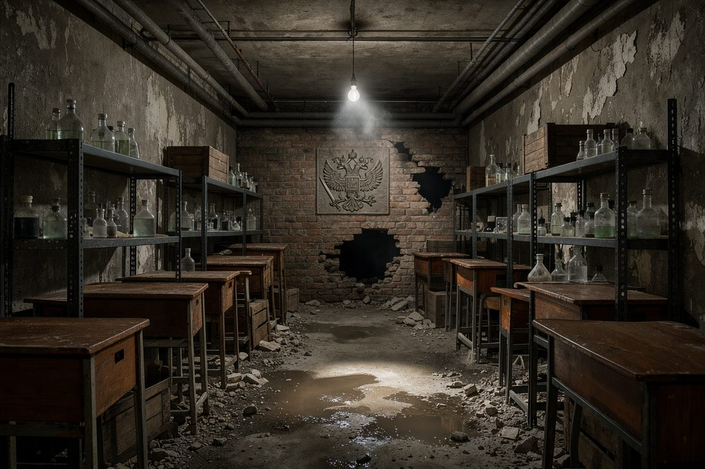
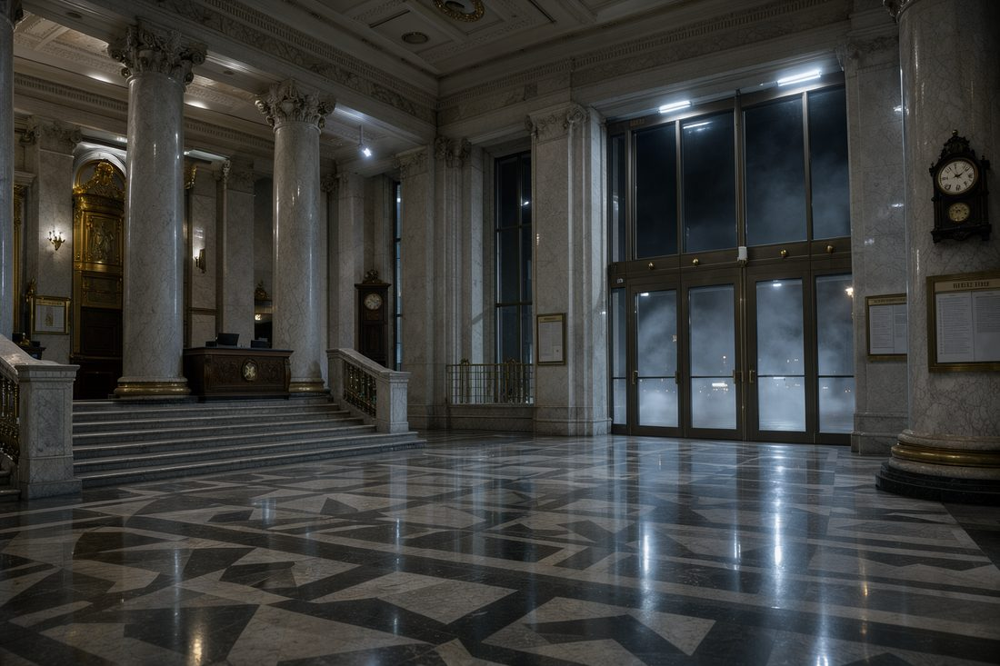
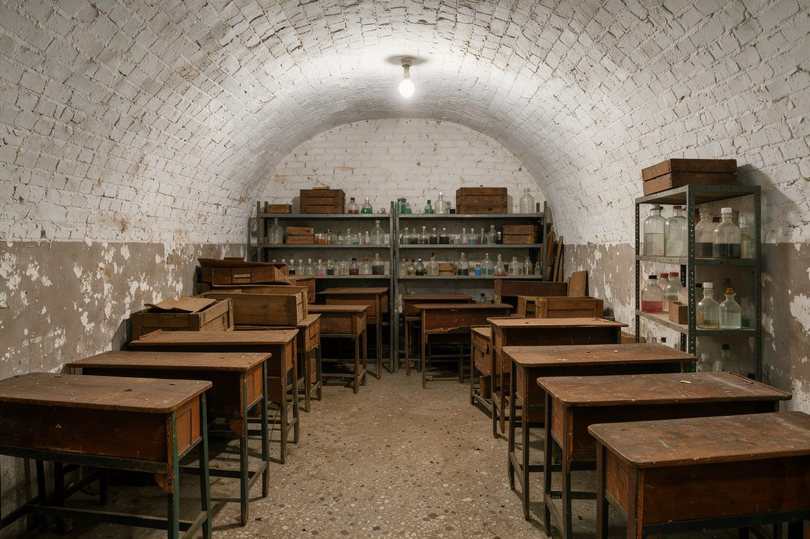
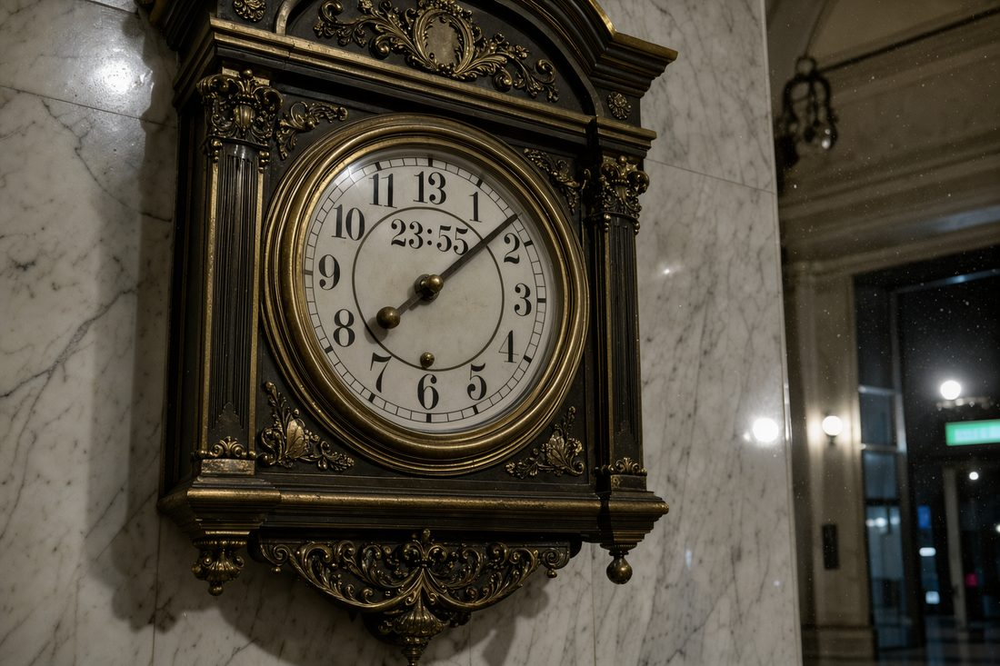
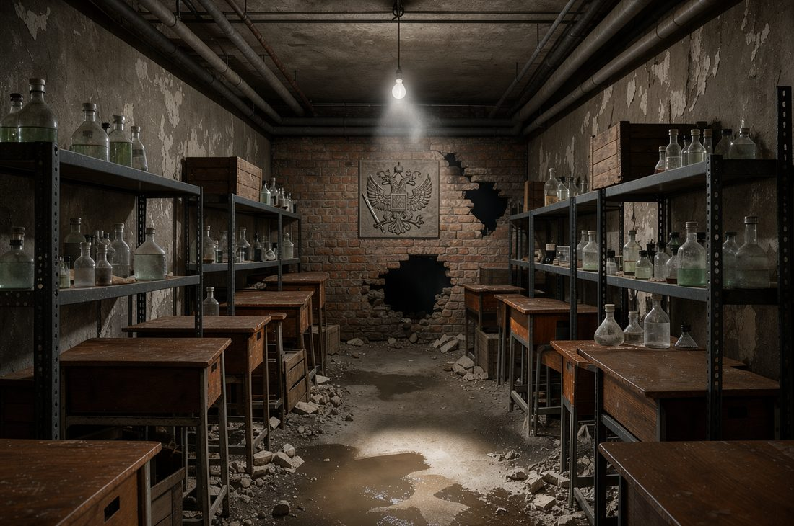
Hero-кадр задаёт характер, turnaround фиксирует костюм и пропорции — чтобы герой не «плыл» между шотами.
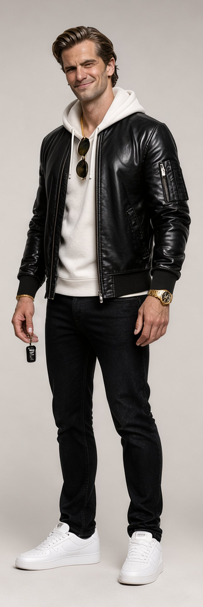
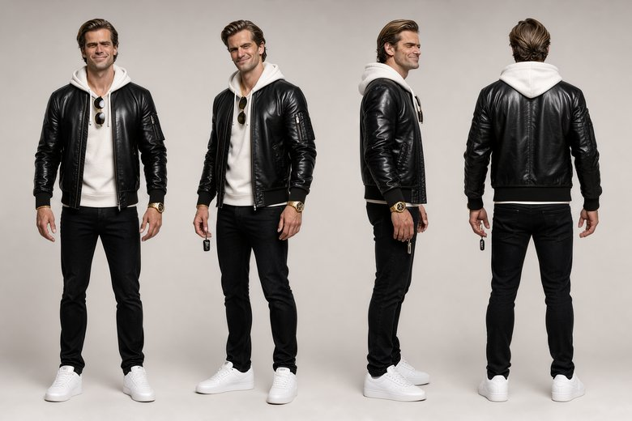
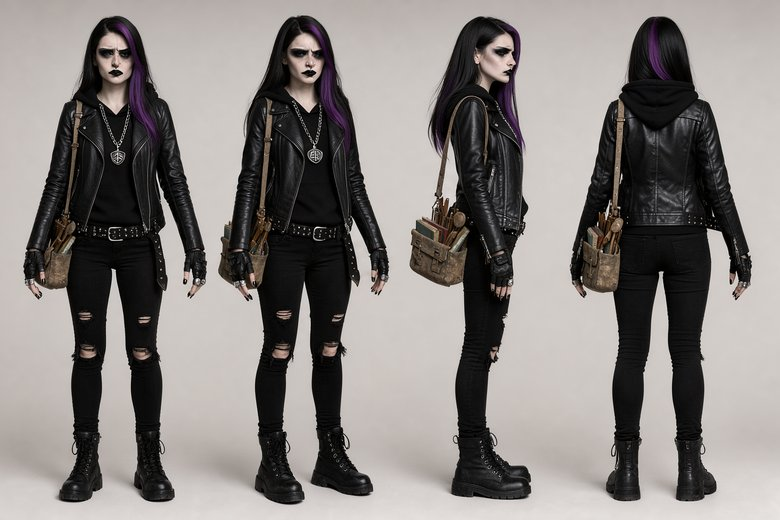
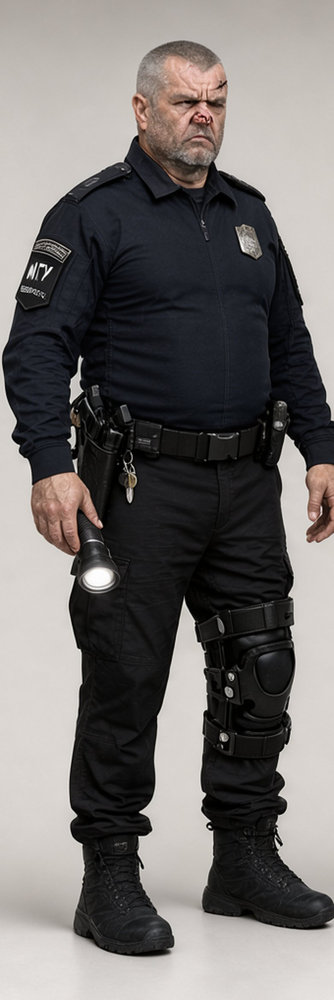
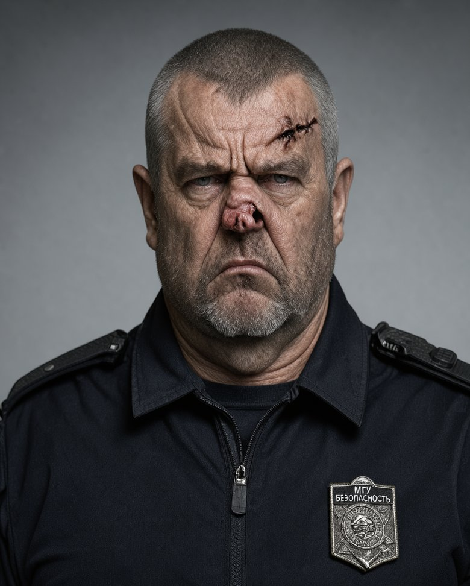
Вещь должна читаться в кадре крупным планом и совпадать в каждом появлении — как паспорт Иоанна IV.
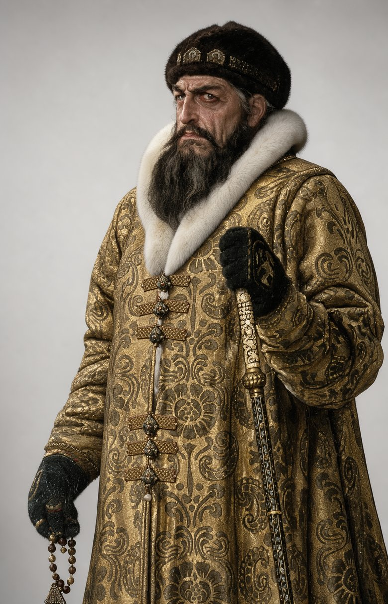
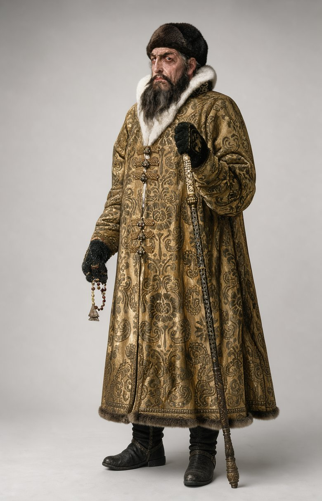
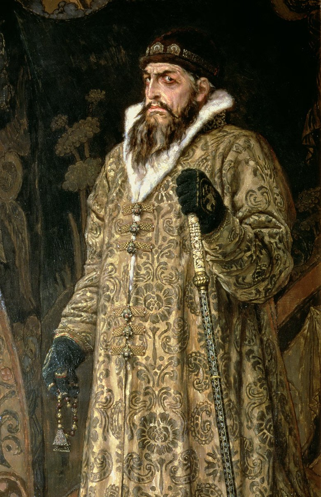
Робот предлагает планы и ракурсы под действие: где нужен общий, где — средний, а где взгляд героя.
loc_central_hall_argus ×15
dome_screen ×5analyst_terminal ×5confetti ×4
coffee_cup ×3Элара ×9Финн ×6
loc_analysis_center ×15
hologram_projector ×4server_rack ×2leak_pipe
corridor ×1все четверо
loc_corridor_elara_office ×12
elara_desk_lamp ×6glass_wall ×2coffee_cup
Робот проставляет linked assets у шотов, а потом
сверяет результат с API проекта — без «на глаз».
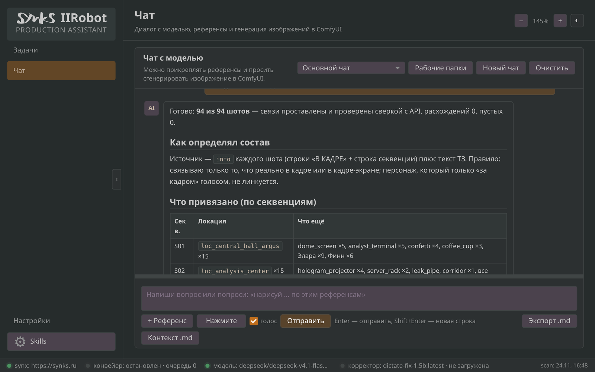
Один робот ведёт проект от текста до версий в synx. Осталось начать диалог.